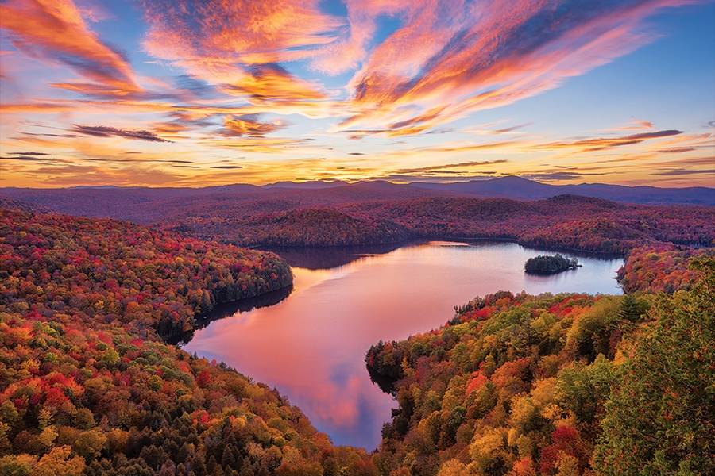

Travel-Mexico
Mexico: Guanajuato


Geographical Location: North America
As the sun dips low in the sky, Guanajuato, the vibrant small town in Mexico, unfolds a spectacular tableau of hues and shadows that bewitch every onlooker.
The historic town, celebrated as the backdrop for the acclaimed animation "Coco," transforms into a realm of dreams.
Its vividly painted houses, basking in the warm golden glow of the evening sun, offer a picturesque sight that resonates deeply with the joyous and spirited theme of the beloved movie.
Guanajuato at twilight is a painting that comes to life, a perfect blend of reality and the fantastic world depicted in "Coco."
The array of colors presented by the quaint houses form a harmonious canvas that radiates a tranquil yet vibrant energy as the day transitions to night.
This little town, full of life and color, offers a surreal experience, inviting dreamers and artists alike to immerse themselves in its poetic scenery, alive with stories and rich cultural tapestry.
Photo Gallery

|

|

|

|
London

London: A City of Heritage and Modernity
Geographical Location: Europe
As one of the most iconic cities in the world, London carries a rich history that is matched by its continuous growth and evolution. A powerhouse of culture, politics, and finance, it stands as a city where the past and present exist harmoniously side by side.
From the ancient towers that narrate tales of a regal past to modern architectural marvels that reach for the skies, London offers an unrivaled blend of history and modernity. The city invites locals and tourists alike to immerse themselves in its vibrant life, where every street corner unfolds a story.
At the heart of the city lies the majestic British Museum, a sanctuary of the world’s heritage, housing a vast collection of world art and artifacts, narrating the tales of human history, art, and culture. Nearby, the historical Victoria and Albert Museum and the Natural History Museum await, offering a rich exploration of art, design, and the natural world.
As the sun sets, the city transitions, with landmarks like Big Ben and the streets around King's Cross station taking on a magical hue, the golds and blues reflecting London's everlasting grandeur. London at dusk is a testament to its enduring beauty, a city that promises both the comfort of the familiar and the joy of the new.
British Museum
Home to a plethora of world art and artifacts, the British Museum offers a journey through the world's cultures. The lion statue is a remarkable sculpture that stands guard at the museum, representing its grandeur.

Victoria and Albert Museum
This museum is a feast for the art aficionados, presenting a rich collection of artifacts spanning over 5000 years, including ceramics, fashion, furniture, glass, metalwork, paintings, photographs, and more.

Natural History Museum
Visitors are greeted by a fascinating array of natural history exhibits, including dinosaur skeletons and meteorites. Here are glimpses of both its stunning exterior and its rich interior.


Big Ben and King's Cross Station
Big Ben, the deep-bell clock tower is one of London's iconic landmarks. King's Cross Station, a major railway and underground station in London, is known for its remarkable architecture and its association with the Harry Potter series.

London: Photo Gallery
|
|
|
|
|
|
Vatican

Vatican: A Beacon of Art and Spirituality
Geographical Location: Europe
The Vatican, the smallest independent state in the world, stands as a towering beacon of art, history, and spirituality. Nestled in the heart of Rome, this citadel of Catholicism is a treasure trove of art and architectural wonders, resonating deeply with centuries of religious devotion and artistic endeavor.
As the day unfolds, the Vatican offers a journey through time, allowing you to trace the footsteps of legendary artists and pontiffs who left an indelible mark in history. The iconic spiral staircase of the Vatican Museum narrates stories through its curvaceous path, leading to artistic marvels such as the Athenian Academy painting, a true depiction of scholarly discourse.
Outside, St. Peter's Square opens up as a grand space of convergence, harmoniously bringing together spirituality and artistic grandeur. From here, a serene walk leads to the riverside, offering a tranquil view of the Vatican City, a sight where grand architecture meets the calm waters, standing still in the river of time, echoing stories of a rich past.
As dusk approaches, the Vatican transforms into a realm of golden hues and quiet reflection, a place where every stone, every painting, and every pathway invites you to delve deeper into the rich tapestry of art, faith, and history that constitutes this unique place, offering a glimpse into the divine and the sublime.
Vatican Museums
The Vatican Museums boast an impressive collection of art, historical, and cultural artifacts. The Spiral staircase is one of the many architectural marvels here.

The Painting Behind the Milan Tech Emblem
This iconic painting housed in the Vatican Museums was the inspiration behind the Milan Technological Institute's emblem, linking art to modern education.

St. Peter's Square
St. Peter's Square is the monumental plaza in front of St. Peter's Basilica. With its massive columns and beautiful fountains, it is a masterwork of Renaissance architecture.
Vatican: Photo Gallery

|

|

|

|
Shanghai

Shanghai: The Fusion of Tradition and Modernity
Geographical Location: East Asia
Shanghai, a vibrant metropolis, stands as a testament to China's rapid growth and development. The city is a harmonious blend of traditional and modern elements, offering both historical richness and futuristic architecture.
From the historic Yu Garden to the towering Shanghai Tower, the city offers a rich tapestry of experiences. The Wukang Building stands as a symbol of the city's historical architecture, while the China Art Museum showcases the finest art pieces, narrating the tales of Chinese history and culture.
As the day transitions to night, the city takes on a new life, with neon lights illuminating the streets, offering a vibrant nightlife and a plethora of gastronomic experiences.
Whether it's a stroll along the Bund or a visit to the numerous museums, Shanghai promises an unforgettable journey through its streets laden with history, culture, and modernity.
Yu Garden
A historic garden that offers a peaceful retreat in the heart of the bustling city, showcasing traditional Chinese architecture and garden design.

Shanghai Tower
Standing tall as the second tallest building in the world, the Shanghai Tower is a marvel of modern architecture, offering breathtaking views of the city.

Shanghai: Photo Gallery

|

|

|
|
Vermont
Vermont: Nature's Canvas
Geographical Location: Northeastern United States
Vermont, known as the Green Mountain State, is a haven for nature enthusiasts. The state is renowned for its stunning landscapes, including the breathtaking Quechee Gorge and the serene Lake Willoughby.
As you traverse through Vermont, you will be greeted by picturesque views, whether it's the vibrant hues of fall foliage or the tranquil scenes of cozy cabins nestled amidst nature.
The state offers a rich tapestry of experiences, from hiking trails leading to hidden waterfalls like Bingham Falls to road trips that unveil the state's natural beauty in all its glory.
Whether it's a retreat into a cozy cabin or a day spent exploring the natural wonders, Vermont promises a refreshing escape into nature's lap, offering peace, tranquility, and a rejuvenating experience.
Quechee Gorge
Known as Vermont's Little Grand Canyon, Quechee Gorge offers stunning views and hiking trails that promise an adventure amidst nature.

Lake Willoughby
A natural wonder, Lake Willoughby is a serene destination offering crystal clear waters surrounded by lush green mountains.

Vermont: Photo Gallery

|

|

|

|